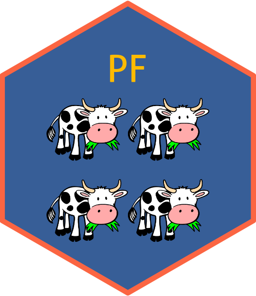

RR score based asymptotic CI.
RRsc.RdEstimates confidence intervals for the risk ratio or prevented fraction based on the score statistic.
Usage
RRsc(
y = NULL,
data = NULL,
formula = NULL,
compare = c("vac", "con"),
alpha = 0.05,
pf = TRUE,
trace.it = FALSE,
iter.max = 18,
converge = 1e-06,
rnd = 3
)Arguments
- y
Data vector c(y1, n1, y2, n2) where y are the positives, n are the total, and group 1 is compared to group 2 (control or reference group).
- data
data.frame containing variables of formula.
- formula
Formula of the form
cbind(y, n) ~ x, where y is the number positive, n is the group size, x is a factor with two levels of treatment.- compare
Text vector stating the factor levels:
compare[1]is the vaccinate group to whichcompare[2](control or reference) is compared.- alpha
Complement of the confidence level.
- pf
Estimate RR or its complement PF?
- trace.it
Verbose tracking of the iterations?
- iter.max
Maximum number of iterations
- converge
Convergence criterion
- rnd
Number of digits for rounding. Affects display only, not estimates.
Value
A rrsc object with the following fields.
estimate: matrix of point and interval estimates - see detailsestimator: either"PF"or"RR"y: data.frame with "y1", "n1", "y2", "n2" values.rnd: how many digits to round the displayalpha: complement of confidence level
Details
Estimates are returned for three estimators based on the score
statistic. The score method was introduced by Koopman (1984). Gart and
Nam's modification (1988) includes a skewness correction. The method of
Miettinen and Nurminen (1985) is a version made slightly more conservative
than Koopman's by including a factor of \((N - 1) / N\). The starting
estimate for the DUD algorithm is obtained by the modified Katz method (log
method with 0.5 added to each cell). Both forms of the Katz estimate may be
retrieved from the returned object using RRsc()$estimate.
The data may also be a matrix. In that case Y would be entered as
matrix(c(y1, n1-y1, y2, n2-y2), 2, 2, byrow = TRUE).
References
Gart JJ, Nam J, 1988. Approximate interval estimation of the ratio of binomial parameters: a review and corrections for skewness. Biometrics 44:323-338.
Koopman PAR, 1984. Confidence intervals for the ratio of two binomial proportions. Biometrics 40:513-517.
Miettinen O, Nurminen M, 1985. Comparative analysis of two rates. Statistics in Medicine 4:213-226.
Ralston ML, Jennrich RI, 1978. DUD, A Derivative-Free Algorithm for Nonlinear Least Squares. Technometrics 20:7-14.
Examples
# All examples represent the same observation, with data entry by using
# multiple notation options.
y_vector <- c(4, 24, 12, 28)
RRsc(y_vector)
#>
#> PF
#> 95% interval estimates
#>
#> PF LL UL
#> MN method 0.611 0.0251 0.857
#> score method 0.611 0.0328 0.855
#> skew corr 0.611 0.0380 0.876
#>
# PF
# 95% interval estimates
# PF LL UL
# MN method 0.611 0.0251 0.857
# score method 0.611 0.0328 0.855
# skew corr 0.611 0.0380 0.876
y_matrix <- matrix(c(4, 20, 12, 16), 2, 2, byrow = TRUE)
# [, 1] [, 2]
# [1, ] 4 20
# [2, ] 12 16
RRsc(y_matrix)
#>
#> PF
#> 95% interval estimates
#>
#> PF LL UL
#> MN method 0.611 0.0251 0.857
#> score method 0.611 0.0328 0.855
#> skew corr 0.611 0.0380 0.876
#>
# PF
# 95% interval estimates
# PF LL UL
# MN method 0.611 0.0251 0.857
# score method 0.611 0.0328 0.855
# skew corr 0.611 0.0380 0.876
require(dplyr)
data1 <- data.frame(group = rep(c("treated", "control"), each = 2),
y = c(1, 3, 7, 5),
n = c(12, 12, 14, 14),
cage = rep(paste("cage", 1:2), 2))
data2 <- data1 |>
group_by(group) |>
summarize(sum_y = sum(y),
sum_n = sum(n))
RRsc(data = data2, formula = cbind(sum_y, sum_n) ~ group,
compare = c("treated", "control"))
#>
#> PF
#> 95% interval estimates
#>
#> PF LL UL
#> MN method 0.611 0.0251 0.857
#> score method 0.611 0.0328 0.855
#> skew corr 0.611 0.0380 0.876
#>
# PF
# 95% interval estimates
# PF LL UL
# MN method 0.611 0.0251 0.857
# score method 0.611 0.0328 0.855
# skew corr 0.611 0.0380 0.876